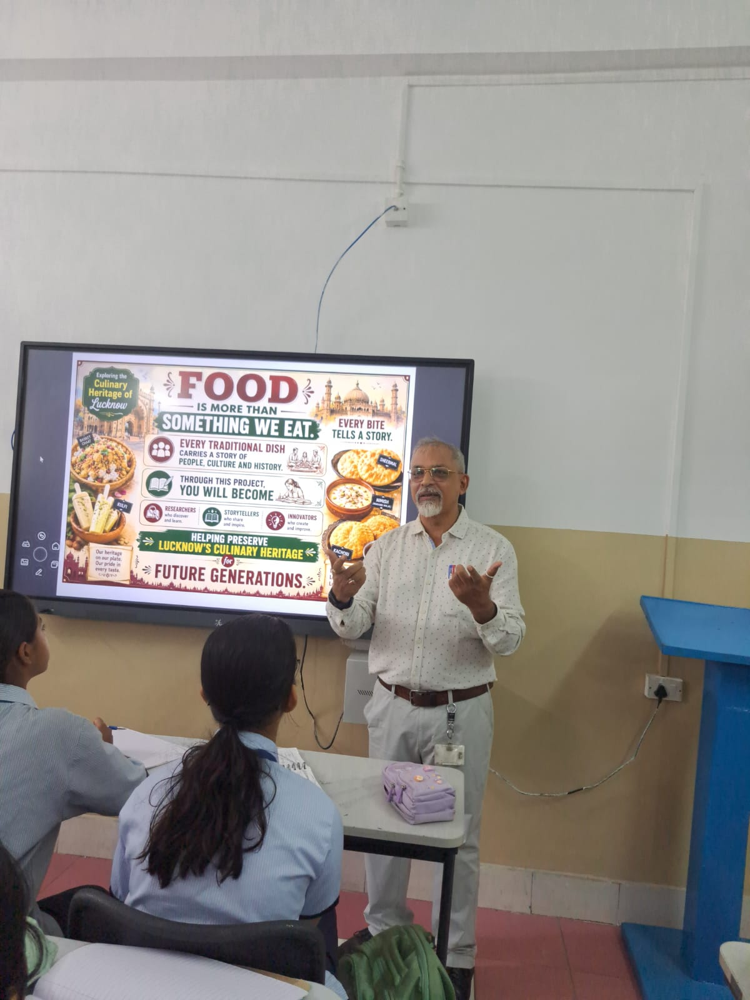
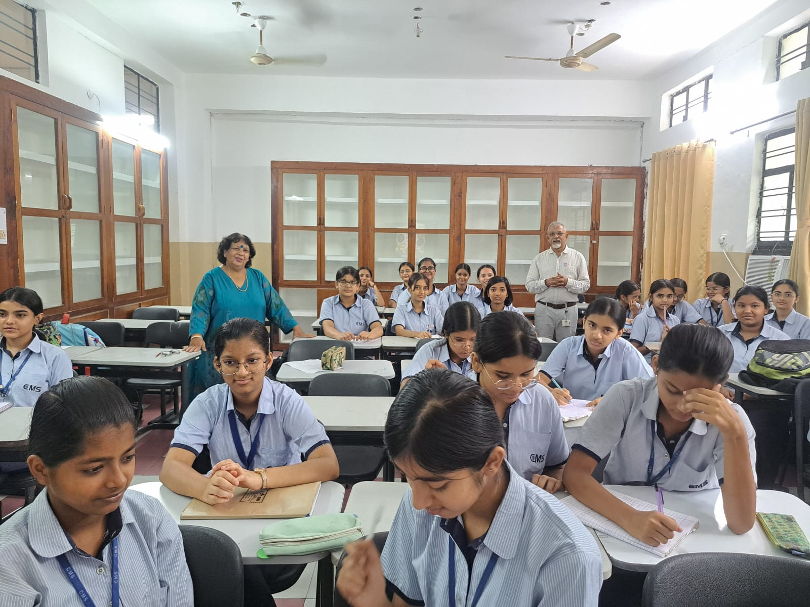
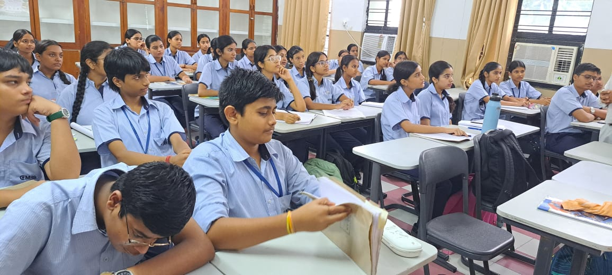

First Brainstorming Session
Where ideas took shape and our research group set its first direction for documenting the living history of Awadh.
A look back at how our initiative began — capturing the early discussions, fieldwork, and moments where our research group first took shape.
Where ideas took shape and our research group set its first direction for documenting the living history of Awadh.

Our initial step into Lucknow’s rich heritage lanes, gathering primary sources and local interactions.

Bringing together students, archivists, and creative leads to launch the full research project.

Writing the main topics understandig the words and heritage trying to connect and forming a mind-map.